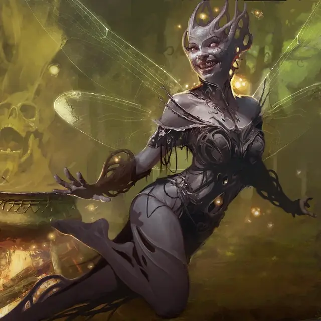

Самозванец высших фей
High Fae Impostor
Средняя Фея, любое мировоззрение

Класс Доспеха 15
Хиты 149 (23к8 + 46)
Скорость 30 футов, летая 30 футов (парит)
| мод | спас | ||
|---|---|---|---|
| СИЛ | 13 | +1 | +1 |
| ЛОВ | 21 | +5 | +9 |
| ТЕЛ | 15 | +2 | +2 |
| мод | спас | ||
|---|---|---|---|
| ИНТ | 18 | +4 | +4 |
| МДР | 16 | +3 | +7 |
| ХАР | 23 | +6 | +6 |
Навыки Выступление +10, Обман +14, Скрытность +13
Сопротивление урону дробящий, колющий, рубящий от немагических атак
Языки Общий, Сильван
Опасность 11 (7200 опыта)
Бонус мастерства +4
Особенности
Сопротивление магии. Высшая фея совершают с преимуществом спасброски от заклинаний и других магических эффектов.
Действия
Мультиатака. Высшая фея совершает две атаки Клинком фей и один раз использует Досадный розыгрыш.
Клинок фей. . Рукопашная атака оружием: +9 к попаданию, досягаемость 5 фт., одна цель. Попадание: 18 (3к8 + 5) урона силовым полем.
Использование заклинаний. Высшая фея может накладывать одно из следующих заклинаний, не требующее материальных компонентов и использующее Харизму в качестве базовой характеристики для заклинания (Сл спасброска 18):
• Неограниченно: дружба [friends], малая иллюзия [minor illusion]
• 1/день каждое: речь златоуста [enthrall], нистулова ложная аура [nystul's magic aura]
Досадный розыгрыш. Высшая фея нацеливается на одно видимое ей существо, в пределах 60 футов, с помощью магического трюка. Цель должна совершить спасбросок Мудрости Сл 18. В случае провала цель получает 21 (6к6) урона психической энергией и становится испуганной до начала следующего хода высшей феи. В случае успеха цель получает только половину этого урона.
Бонусные действия
Сходство с добычей. Высшая фея волшебным образом превращается в копию Маленького или Среднего существа, которое они видят. Во время трансформации высшие феи сохраняют свои игровые характеристики (кроме своего размера), но получают доступ к достаточной общей информации о имитируемом существе, такой как происхождение и личность, чтобы реалистично выдовать себя за это существо. Это преобразование заканчивается, если хиты высшей феи уменьшаются до 0, она снова использует Сходство с добычей или использует бонусное действие, чтобы вернуться в свою истинную форму.
Описание
«Хотя высшие феи Элдраина не способны откровенно лгать, в их распоряжении есть множество других средств обмана».
Самозванцы из высших фей — это хитрые и озорные обманщики, которым нравится маскироваться с помощью магии, чтобы досадить другим существам. Причины обмана у них разные: от безобидных розыгрышей до злонамеренного проникновения. Когда самозванец из высших фей принимает личность другого существа, он магическим образом получает доступ к небольшой части разума этого существа — любой информации, которой существо может поделиться со случайным знакомым. Хотя эта информация и не является исчерпывающей, она помогает самозванцам из высших фей эффективно выдавать себя за свои цели.
Высшие феи
Нестареющие и бесчеловечные высшие феи — старейшие существа Элдраина, олицетворяющие природное великолепие и опасность дикой природы. Высшие феи не уважают смертные ценности чести и закона, но, действуют по собственным нерушимым правилам: подарки всегда должны быть возвращены, обещания должны соблюдаться, и никогда не следует говорить откровенную ложь (хотя неверное направление и загадки всегда приветствуются). Чтобы развлечься на протяжении долгих столетий своей жизни, высшие феи часто прибегают к обманам и другим сложным остроумным играм друг против друга.
Большинство высших феи остаются уединёнными глубоко в дебрях Элдраина. Они черпают силу из пятнышек света, встречающихся в дебрях, и используют свою врожденную магию иллюзий для усиления и украшения своего оружия.
Высшими феями управляет Талион, Добрый Лорд. Талион столь же странен, древен и непостоянен, как дебри Элдраина, и Добрый Лорд требует от последователей верности и уважения. Несмотря на суровую манеру поведения, Добрый Лорд также известен тем, что следует таинственным прихотям и путешествует в самые дальние уголки Элдраина из-за ненасытного любопытства.